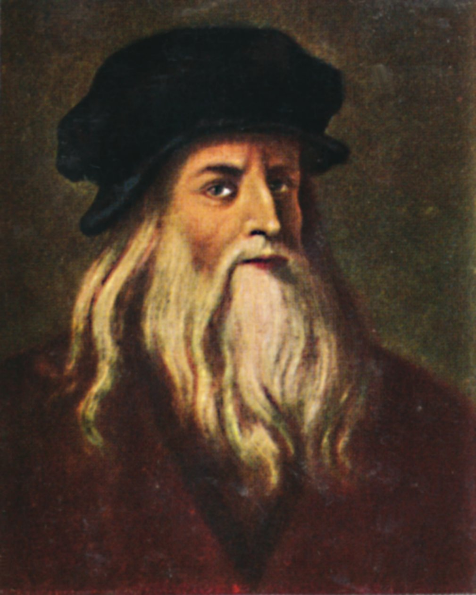
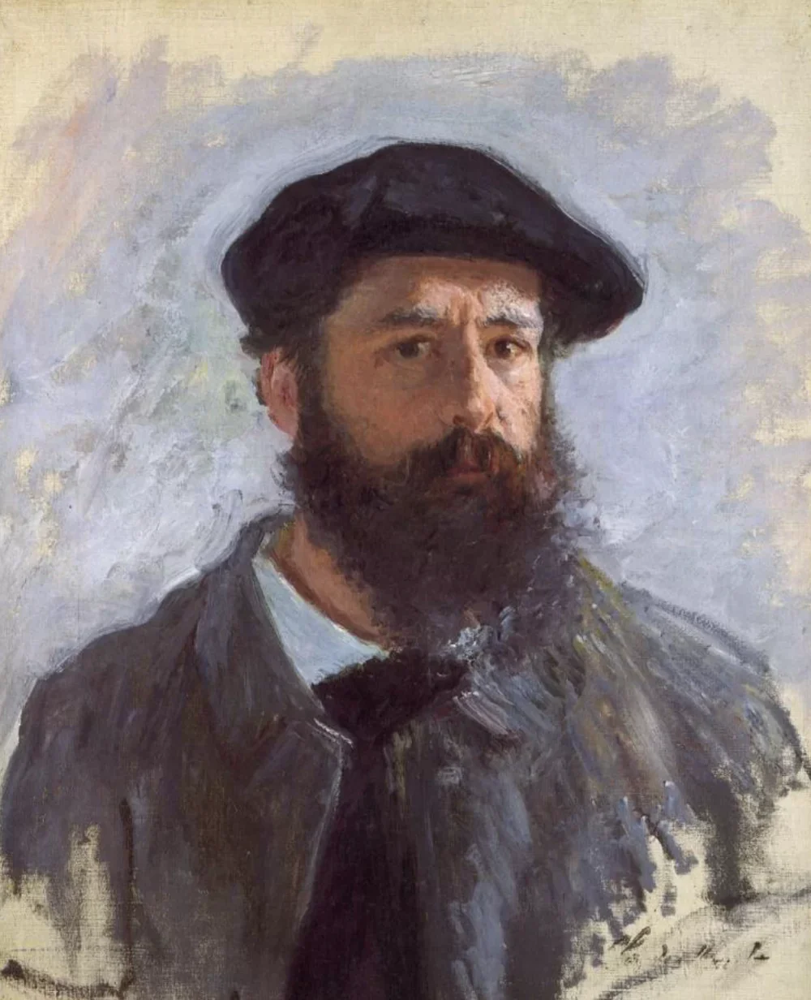

Bienvenido a Nuestra Galería Educativa
Explora 5 periodos artísticos fundamentales que transformaron la historia del arte occidental.
"El arte es la expresión de los más profundos pensamientos por el camino más sencillo." - Albert Einstein
TribiqueTech
Explora 5 periodos artísticos fundamentales que transformaron la historia del arte occidental.
"El arte es la expresión de los más profundos pensamientos por el camino más sencillo." - Albert Einstein
Caracterizado por el humanismo y el redescubrimiento del arte clásico.
Estilo dramático y emocional con fuertes contrastes de luz.
Enfoque en la luz natural y pinceladas visibles.
Ruptura con la tradición y exploración de nuevas formas de expresión.
Diversidad de medios y enfoques conceptuales en el arte actual.
| Artista | Periodo | Años | Obra Representativa | Nacionalidad |
|---|---|---|---|---|
|  Leonardo da Vinci | Renacimiento | 1452-1519 | La Gioconda | Italiana |
 Diego Velázquez
Diego Velázquez
|
Barroco | 1599-1660 | Las Meninas | Española |
|  Claude Monet | Impresionismo | 1840-1926 | Impresión, sol naciente | Francesa |
 Vincent van Gogh
Vincent van Gogh
|
Post-Impresionismo | 1853-1890 | La Noche Estrellada | Neerlandesa |
 Miguel Ángel
Miguel Ángel
|
Renacimiento | 1475-1564 | La Creación de Adán | Italiana |
| Total artistas mostrados: 5 | ||||

Surge en IT con artistas como Masaccio y Fra Angelico.
Apogeo con LDV, Miguel Ángel y Rafael.
Desarrollado principalmente en ES, Italia y Flandes.
Nivel de dramatismo: 8/10
Revolución del color y la luz en FR.